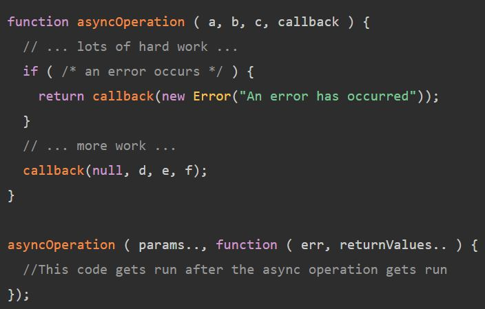
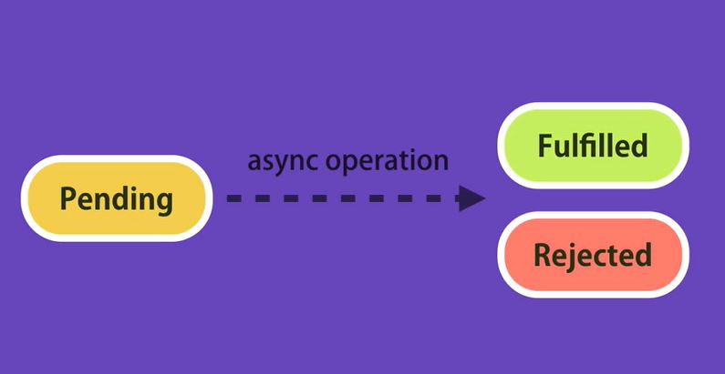
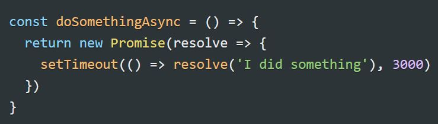
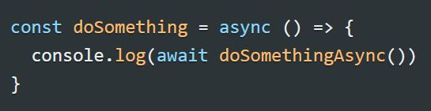

Asynkron programmering
Som beskrevet under "node" afsnittet, er Node.JS en-trådet og non-blocking.
Det betyder, at den samme tråd udfører alt i applikationen, men det gøres, uden at ét kald blokere evt. andre kald
I andre en-trådede applikationer, vil en tråd være blokeret fra at kunne håndtere andre kald, så længe den er i gang med en opgave
I Node.JS køres det asynkront:
- Tråden tager f.eks mod et kald, som anmoder om en ressource
- Tråden planlægger herefter et databasekald, for at få fat i denne ressource
- Imens ressourcen hentes fra databasen, er tråden ledig til at håndtere andre kald til applikationen
- Når ressourcen er hentet fra databasen, vender tråden tilbage til opgaven og sender ressourcen tilbage til dén der har anmodet om den
For at arbejde asynkront benyttes callbacks og Promises
Callbacks
- En funktion, der kaldes, når resultatet af en asynkron operation er klar
- Dette gøres for at undgå blokering, og muliggører at anden kode kan udføres, mens der ventes på et resultat
- Eksemplet ovenfor med databasekaldet, kunne se således ud i en callback funktion:

Promises
- Et objekt, som lagrer det resultat, der kommer ud af en asynkron operation
- Når et objekt oprettes er det "pending"
- Objektet udfører en asynkron operation
- Hvis operationen er succesfuld ændres objektets state til "fulfilled" og det har fået en værdi, der kan anvendes andre steder i ens applikation
- Hvis noget i operationen er fået galt er objektets state i stedet "rejected"

- Promise objektet kan 'consumes'/bruges med metoderne .then og .catch
- hvis objektet er "fulfilled" kaldes .then
- Hvis ikke kaldes .catch
- Man kan også benyttes sig af async/await, hvis man vil anvende Promises på en anden måde
- En async funktion returnere et promise objekt

- For at kalde denne funktion skrives "await" foran kaldet.
- Den metode, der kalder async metoden, skal anføres med "async"
